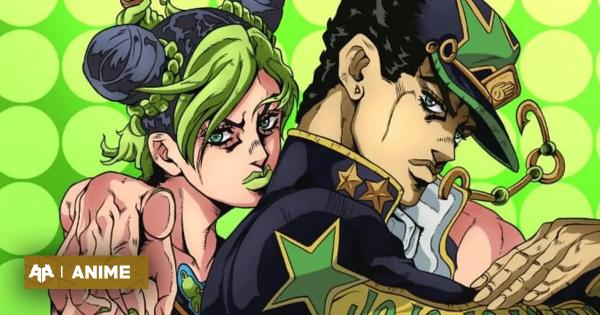
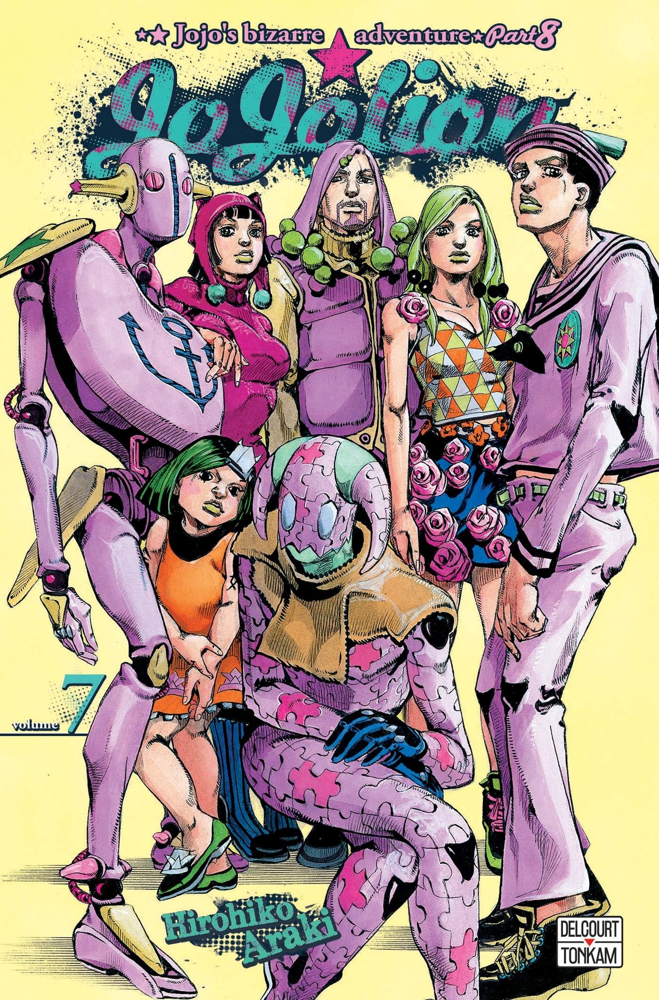

Apres le succès retentissant de l'adapatation
en anime de la partie golden wind voici qui arrive la suite directe
des aventures de la famille JOJO avec stone ocean, le personnage principale sera cette fois çi
une heroïne, Jolyne Cujoh fille de Jotaro Cujoh(le heros de la partie stardust crusader)
Fin de jojolion:

La 8ème partie du manga de JOJO's bizarre prendra bientôt fin.
Des rumeurs courent que serait la dernière partie mais il est certain que
notre mangaka préféré ARAKI ne nous deçevra pas.
retourner en haut de la page